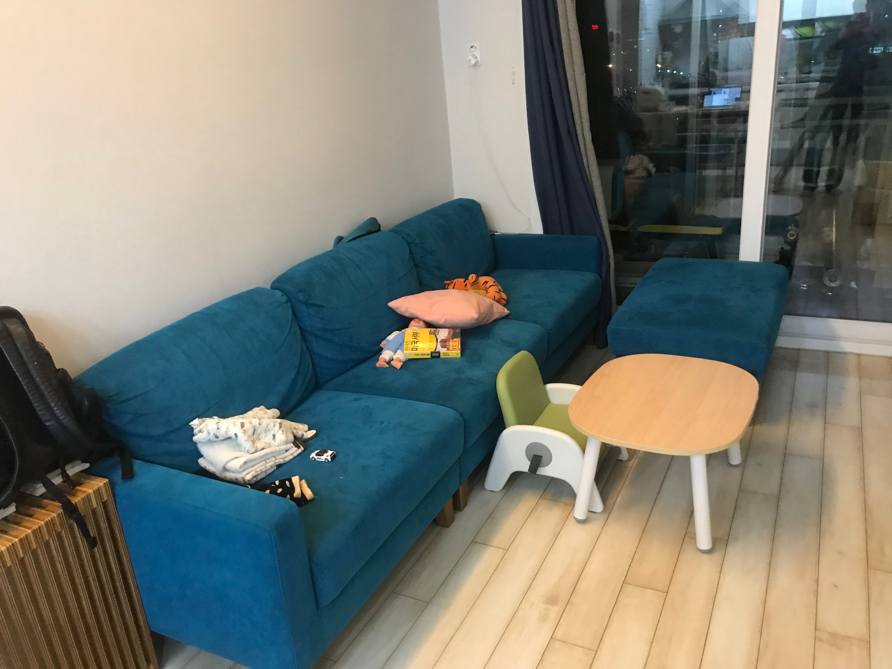

In Western architecture, a living room, also called a lounge room, lounge or sitting room, is a room in a residential house or apartment for relaxing and socializing. Such a room is sometimes called a front room when it is near the main entrance at the front of the house. In large formal homes, a sitting room is often a small private living area adjacent to a bedroom, such as the Queen's Sitting Room and the Lincoln Sitting Room of the White House. The term living room was coined in the late 19th or early 20th century
